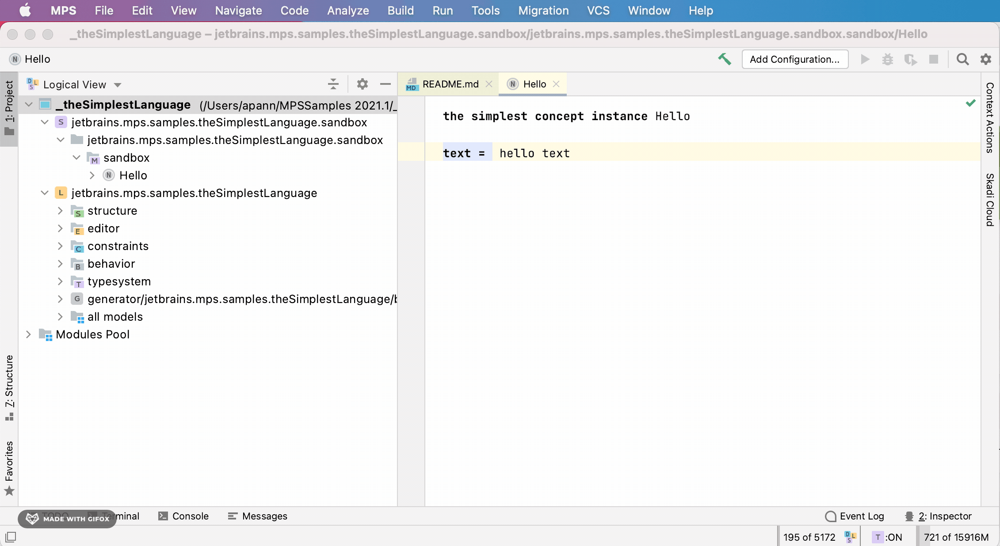
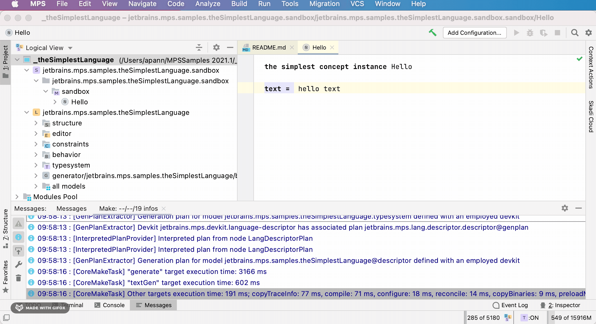
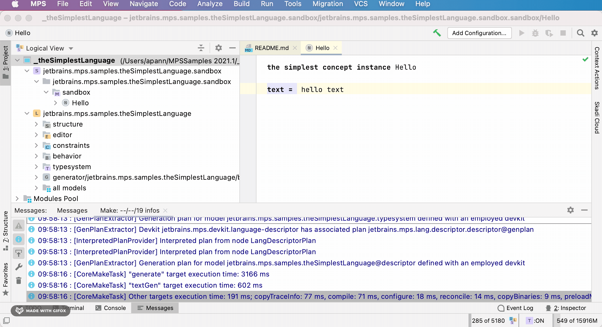
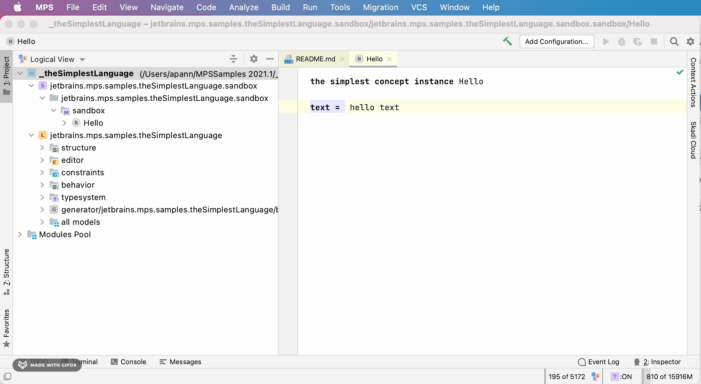
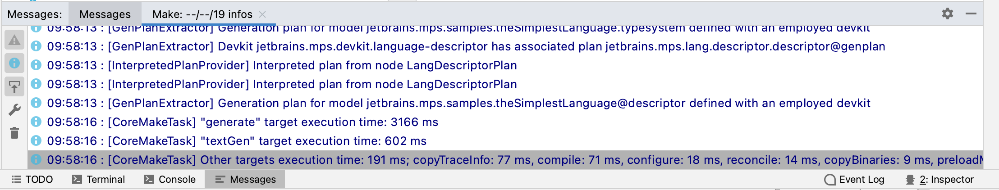

General
This page answers some general questions about MPS and is most useful for  beginners.
beginners.
Who is MPS for?
Who is MPS for? ⧉ (Specific Languages' blog)
I am an MPS beginner. Where do I start?
If you are new to MPS and want to learn more about MPS, start with the following links:
- Learn MPS | official JetBrains landing page ⧉
- Get started with MPS | mps.rocks ⧉
- Learning MPS | mps.rocks ⧉
- Getting Started: Part I (F1RE's blog), Part II ⧉ (F1RE's blog)
Is there a high-level presentation that I can have a look at?
Yes, there is a presentation from 2020 by Václav Pech ⧉.
Are there any video tutorials besides the official videos?
Yes, Heavy Meta TV ⧉ hosts in-depth tutorials about MPS for a total length of 20 hours. @coolya filmed the tutorials as part of a series of live streams in 2018/2019.
I want to learn more about domain-specific languages. Where do I start?
Start with the slides: Introduction to Domain-Specific Languages by Markus Völter. On the books page ⧉, there are also a few relevant books like DSL Engineering (2013) and How to Understand Almost Anything - A Practitioner's Guide to Domain Analysis (2013).
What are the essential shortcuts?
JetBrains MPS Shortcuts ⧉ (F1RE's blog)
Which directory contains the MPS project?
Which directory contains the MPS project? ⧉ (Specific Languages' blog)
What can you do if a problem isn't on this list?
Try invalidating the cache ⧉ and restarting MPS (same menu). Search the forum and issue tracker ⧉. Ask a question on Slack ⧉.
{kind=link}
I changed something in the preferences, and nothing changed.
There might be a bug related to caching. Reopening the dialog, invalidating the cache, or restarting the project might help.
Which standard IDE settings should you change?
When using many languages or plugins, the maximum heap size ⧉ should be changed to a higher value, such as 8 GB.
Another reason for high memory usage can be many (poorly) implemented checking rules.
⧉ should be changed to a higher value, such as 8 GB.
Another reason for high memory usage can be many (poorly) implemented checking rules.
I am running low on memory, or the IDE is running slow. What can you do without restarting MPS?
When you have enabled the loaded models' indicator in the lower right corner of the screen, you can click on the text to unload not needed models ⧉.
To free memory, use the memory indicator. As a last resort, enable the power-saving mode ⧉. It turns off background tasks like the model checker (not recommended).
in the lower right corner of the screen, you can click on the text to unload not needed models ⧉.
To free memory, use the memory indicator. As a last resort, enable the power-saving mode ⧉. It turns off background tasks like the model checker (not recommended).
{kind=link}
What are modules, models, nodes, and concepts?
- What goes where: the basic architecture of MPS projects ⧉ (Specific Languages' blog)
- Ambiguous terms: Modules and models ⧉ (Specific Languages' blog)
- How MPS Identifies Things ⧉ (log verbose's blog)
Can you explain the MPS technology stack, project concepts, and OpenAPI relations?
MPS technology stack, project concepts, and OpenAPI relations explained visually ⧉ (DSLFoundry's blog)
What's an SRepository, and how's it structured?
The MPS sources ⧉ contain the answer. Multiple repositories could be available in the future. If you have a repository, it can resolve references to modules, models, and nodes. There's no need to make IDs globally unique as each subsystem knows which exact repository to use at any moment (e.g., the type system knows where it stores its type nodes, so it will not try to resolve references to them).
A repository contains modules, modules have model roots, and each model root can load models. A module can also be a model container itself (without a model root). A model is then a set of root nodes. Each root node is a root of a tree of nodes. Overall, a repository is a tree structure.
Is there an existing expression/scripting language?
MPS ships with the expressions sample project. A complete and evaluable language is KernelF ⧉ which is available at IETS3 ⧉.
How do you organize large projects?
Read the two answers in this thread ⧉.
How do you debug MPS projects?
Have a look at this blog post or this guide ⧉.
Where are the log messages?
log info logs to the MPS log file idea.log ⧉,
and message info logs to the messages tool window ⧉.
{kind=link}
{kind=link}
Which log level should you use?
Have a look at this Stack Overflow answer ⧉.
How do you export data from MPS?
- The simplest way to export your data from MPS ⧉ (Specific Languages' blog)
- Good and bad ways of exporting DSL models ⧉ (Specific Languages' blog)
- Translation vs export ⧉ (Specific Languages' blog)
Why is a project read-only?
Why is my project suddenly read-only? ⧉ (Specific Languages' blog)
How do you work with more than one project in MPS?
Given that, I want to work on an MPS project that uses other projects and switch between tasks that sometimes need changes on both the dependent and the root projects. I want to switch back and forth between using the default prepackaged project dependencies and my repository of them, where I build them myself. How could I do that?
Option 0: Open multiple projects in MPS at the same time
- Works when doing small changes
- fast
- Unreliable: When changing dependencies in my source models, this leads to a reload operation on the repository, which sometimes messes up the loaded repository and caches
Option 1: Publish and pull from local maven ( IETS3 ⧉)
- reliable
- example ⧉
- The gradle script needs to be told to pull from a local repository e.g. by providing
-PforceLocalDependenciesto IETS3 or use dependency overrides
Option 3: Changing project libraries
- does not affect command-line builds
Option 3a: Command line setup Task (
IETS3 ⧉)
We usually have a ./gradlew setup task in our projects that replaces your .mps/libraries.xml. When you want to change the project, you'll need to change the configuration of that command line setup task and rerun it.
Option 3b: MPS Path variables in settings (deprecated)
In the MPS settings, you can configure path variables that can be used in .mps/libraries.xml to pinpoint the location of a target project.
They will only configure the MPS behavior and not affect the command line builds. So in most cases, you don't want to use them and instead let your build script set up these files.
contributed by: @abstraktor
Can I configure MPS path variables per project?
No, this is not possible. This problem often arises when MPS should open multiple instances (e.g., different branches) of the same project. It is possible to create localized MPS configurations that enable running numerous independent instances of various MPS versions. For Linux you can use nkoester/mps-zookeeper ⧉.
As a general solution, you can download multiple instances of MPS and edit the following paths in bin/idea.properties ⧉: idea.config.path, idea.system.path, idea.plugins.path, and idea.log.path. When you have a repository "repo," you can, for example, replace the name of the MPS version with repo1, repo2, repo3, or a different naming scheme. When using remote debugging ⧉, use other ports for the MPS instances (e.g.5005, 5006…500n), or MPS won't start.
Why is MPS shipped with JBR instead of an installed JDK/JRE?
JBR is a fork of OpenJDK with specific bug fixes and improvements for JetBrains IDEs. JetBrains/JetBrainsRuntime contains more information about this topic. In some platform build scripts, the environment variable JB_JAVA11_HOME can set the JDK home.
For older MPS versions that used Java 8, there was the environment variable JB_JAVA8_HOME.
Are there any resources/communities about domain-specific languages and MPS?
- DSL & MPS books ⧉ by Markus Voelter. Note: Some of these books might be outdated and do not cover the latest features of MPS.
- The complete guide to (external) Domain Specific Languages ⧉ (Strumenta's blog)
- 68 Resources To Help You To Create Programming Languages ⧉ (Strumenta's blog)
- Strumenta Virtual Meetups ⧉